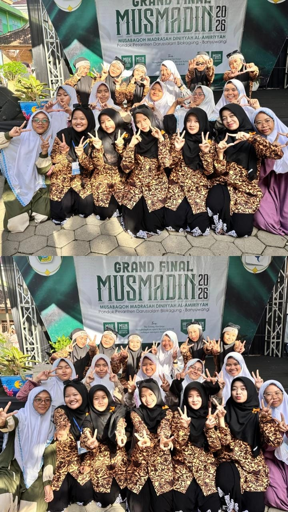

Pesan Spesial dari Kami
Hari ini mungkin menjadi lembar baru di mana kita harus berpisah kelas. Namun, setiap kesabaran, tawa, dan ilmu berharga yang Ibu Adel bagikan selalu tersimpan rapat di hati kami. Terima kasih telah membimbing kami tidak hanya untuk menjadi pintar, tetapi juga untuk menjadi manusia yang lebih baik.
⏳ Garis Waktu Kenangan
Pertemuan Pertama
Awal masuk kelas yang penuh malu-malu, tapi Ibu menyambut kami dengan senyuman paling ramah.
Masa-Masa Ujian
Saat kami panik, Ibu dengan tenang memberi semangat dan berkata: "Kalian pasti bisa melewati ini!"
Hari Perpisahan
Hari ini kita berpisah kelas, tapi kenangan manis ini akan tetap abadi di dalam website ini.
📸 Album Kenangan Kita

Momen Hangat Bersama
Senyum Indah Ibu Adel
✍️ Surat-Surat Kecil
"Terima kasih Ibu Adel tercinta, sudah sabar banget dengerin keributan kami di kelas sehari-hari. Sehat selalu ya, Bu!"
"Jangan lupakan kami ya Bu! Kalau nanti berpapasan di jalan, jangan bosan menyapa kami yang jail ini."
"Ibu Adel adalah tipe guru impian. Cara mengajarnya seru dan tidak bikin ngantuk. Sukses selalu di mana pun Ibu berada!"